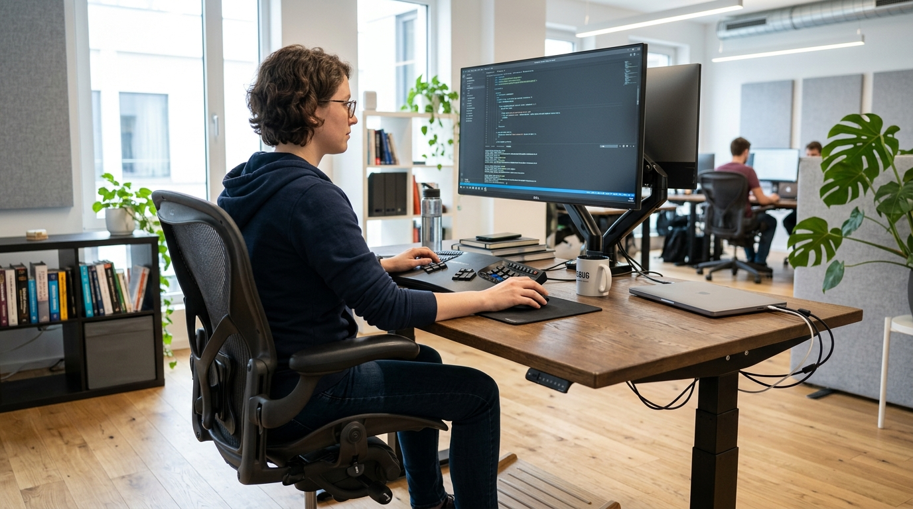
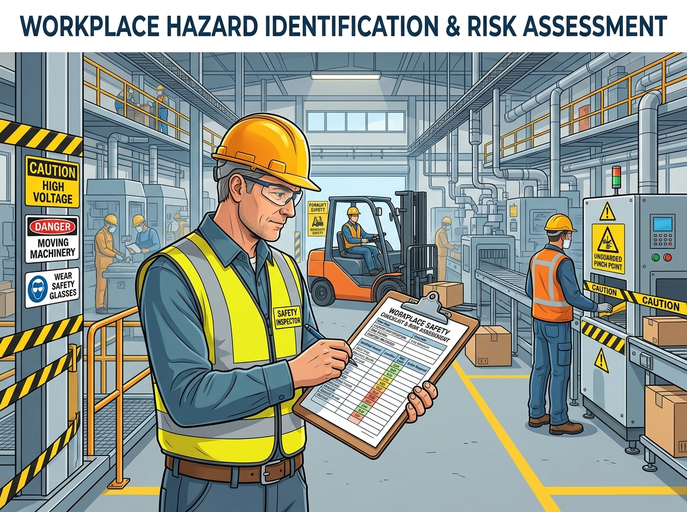
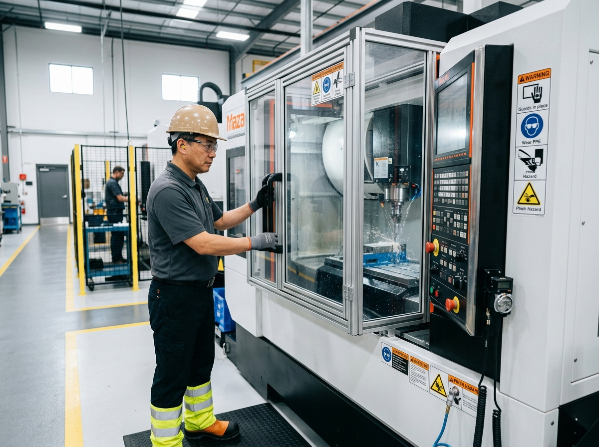
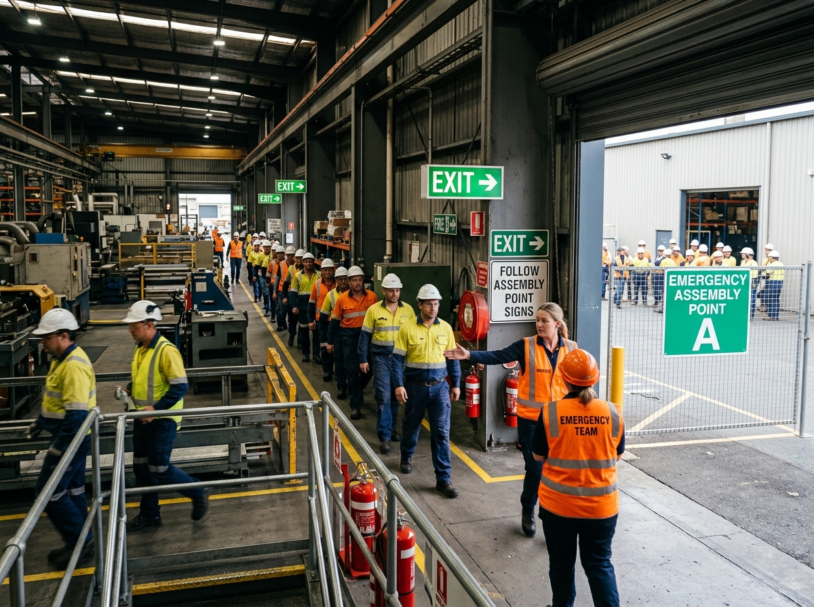
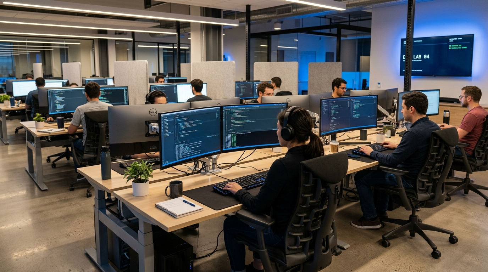

Panduan postur tubuh ideal di depan komputer, sudut 90-100 derajat lengan & lutut, penyesuaian kursi ergonomis, serta pencegahan Carpal Tunnel Syndrome & Low Back Pain.

Mencegah Computer Vision Syndrome (CVS), kelelahan visual akibat paparan layar monitor lama, pengaturan kontras monitor, dan teknik relaksasi mata 20-20-20.

Pencegahan bahaya beban lebih (overload) colokan listrik, bahaya daisy-chaining stop kontak, pentingnya grounding aman, serta manajemen kabel rapi (cable management).

Penanganan kebakaran kelas C pada perangkat elektronik bertegangan, penggunaan APAR gas CO2 / Clean Agent metode PASS, dan larangan APAR air pada komputer aktif.

Strategi mengelola stres coding, beban deadline game/software, penerapan teknik Pomodoro (25/5), peregangan tubuh berkala, serta menjaga pola tidur dan hidrasi yang seimbang.

Standar Operasional Prosedur laboratorium software, larangan cairan/makanan dekat workstation, prosedur aman shut down komputer, serta implementasi budaya 5R.

Prosedur aman perakitan & pembersihan PC lab, proteksi muatan listrik statis (ESD) dengan gelang antistatis, pemutusan sumber daya, dan penanganan tepi casing tajam.

Standar suhu ruangan komputer ideal (20-24°C), intensitas pencahayaan optimal (300-500 lux) tanpa pantulan silau pada layar, kontrol sirkulasi udara, dan tata ruang aman.